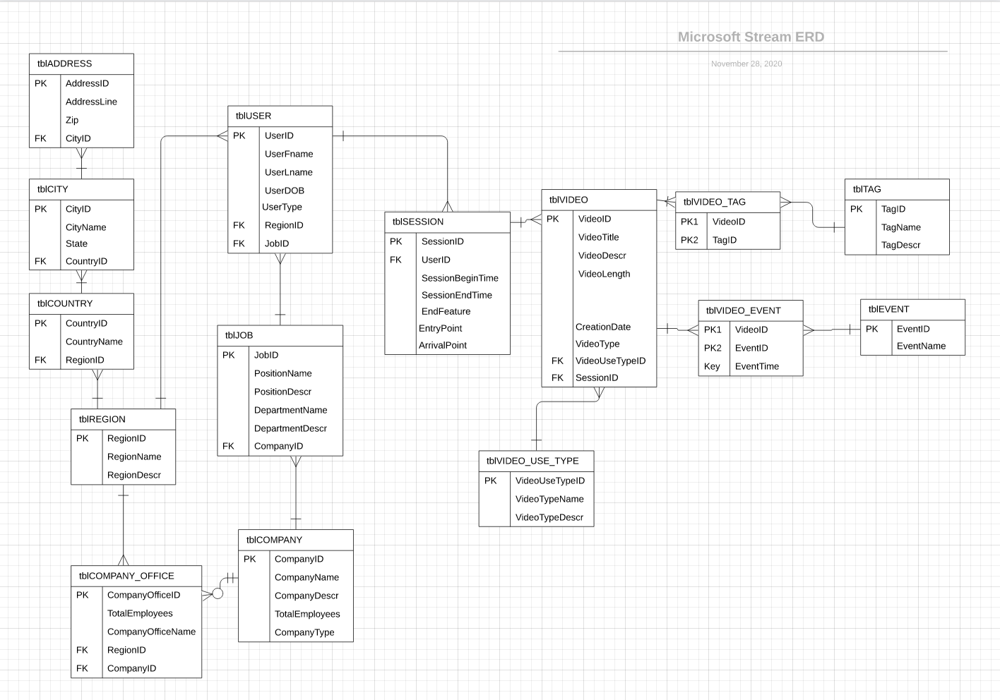
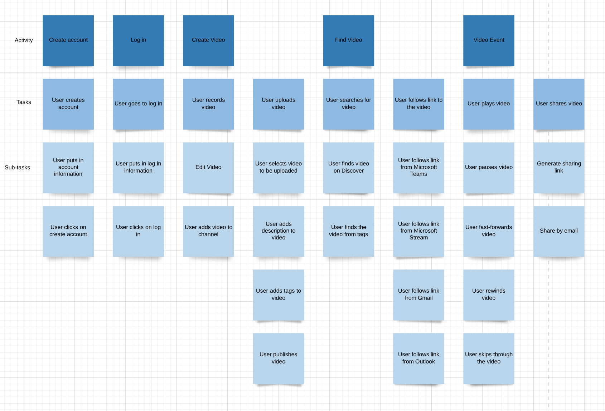

Technologies Used
At the moment, there is no structure to store and use this data for analyzing to evolving the service. I was working with a team of 5 to extract actionable insights by identifying patterns in unstructured data, and develop recommendations to improve their business performance. I used SQL throughout this project and then used PowerBI for data visualizations to present to our stakeholders.
Using Lucid Chart to create an Entity-Relationship Diagram
User Flow
Infographic
Visualizations using PowerBI